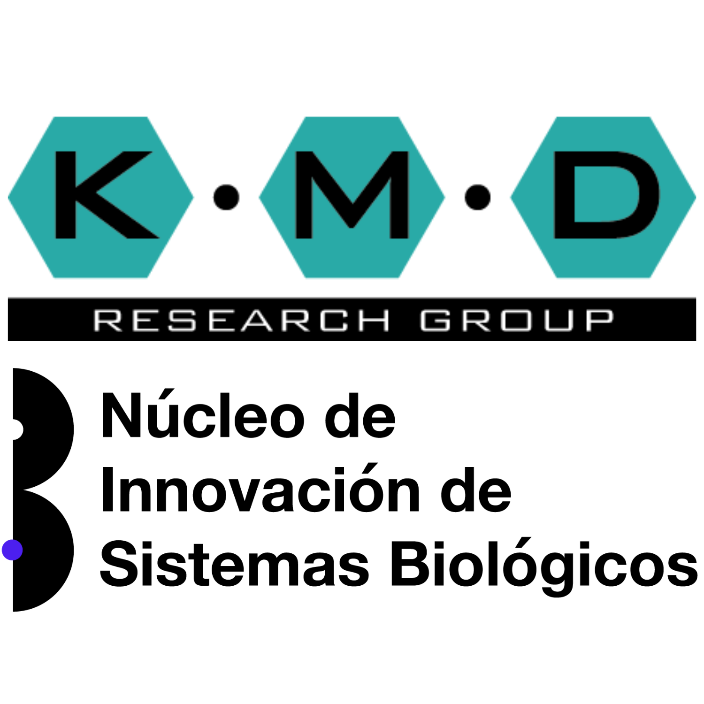
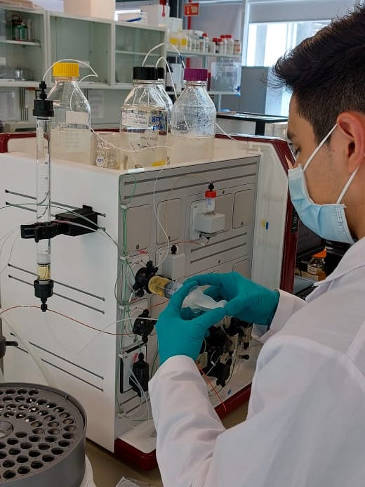

INVESTIGACION Y DESARROLLO DE PROPUESTAS DE MEJORA
Purificación de toxinas provenientes de Clostridium chauvoei

Proyecto de investigación que busca establecer un proceso de purificación para las toxinas FliC y CctA provenientes de Clostridium chauvoei para su aplicación como vacunas para el ganado.



Contacto
Dra. Karla Patricia Mayolo Deloisa (kmayolo@tec.mx)